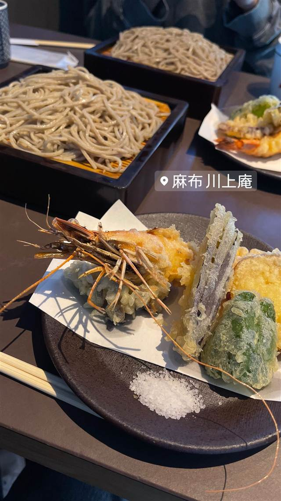

天ぷら 中山
継ぎ足し90年超の真っ黒なタレにくぐらせた黒天丼
てんぷら 中山
WHY GO
昭和5年から90年以上継ぎ足す秘伝のタレで天丼が真っ黒になる
昭和5年創業、90年以上続く人形町の天ぷら店。創業から継ぎ足してきた秘伝のタレにくぐらせた真っ黒な「黒天丼」が名物で、『孤独のグルメ』にも登場した。
TRIVIA
豆知識
- タレは創業当時から継ぎ足しで受け継がれてきたため真っ黒な見た目になる
- 『孤独のグルメ』の聖地としてファンが訪れる
REVIEWS
世間の評判
3.49食べログ
見た目とは違う黒天丼のコクの評判
- 見た目は濃いが思ったよりくどくないタレの味を評価する声が多い
- 見た目とは裏腹に天ぷら本来のサクサク感は少なめだと指摘する声もある
- 昼時は開店前から並ぶほど混雑し早い時間に売り切れることもある
食べログ 口コミ1285件
| 創業 | 昭和5年（1930年）創業 |
|---|---|
| 看板 | 黒天丼 |
| こだわり | 創業以来継ぎ足してきた秘伝の黒いタレにくぐらせる天丼で、甘みと深いコクが特徴 |
| 掲載・評価 | 『孤独のグルメ』Season2 第2話（人形町の黒天丼の回）で紹介された |
| どこから | 都心 |
| 行くなら | 行列 |
| 営業時間 | 月〜金 11:15-13:00、17:30-20:30 土・日 休み |
| 予算 | 昼 ¥1,000～¥1,999 夜 ¥1,000～¥1,999 |
| 場所 | 人形町駅 東京都中央区日本橋人形町 |
| メモ | カウンター6席と座敷を合わせて15席ほど。ランチ時は行列ができることが多い |
食べたもの：天丼
NEARBY
近い店・同じ系統の店
-
 天ぷら・天丼 第一通り駅・浜松駅
天錦(てんきん)
指先で油温を見極める大将の天丼、半熟卵天ものる
昼 ¥1,000～¥1,999 夜 ¥5,000～¥5,999
天ぷら・天丼 第一通り駅・浜松駅
天錦(てんきん)
指先で油温を見極める大将の天丼、半熟卵天ものる
昼 ¥1,000～¥1,999 夜 ¥5,000～¥5,999
-

天ぷら・天丼 麻布十番 麻布 川上庵 軽井沢生まれ、酒肴を楽しんだ後に締める粗挽き二八そば 昼 ¥2,000～¥2,999 夜 ¥8,000～¥9,999 -
 天ぷら・天丼 恵比寿駅
香川一福 恵比寿店
ビブグルマン3年連続、打ちたてのノビのあるコシの讃岐うどん
昼 ～¥999 夜 ～¥999
天ぷら・天丼 恵比寿駅
香川一福 恵比寿店
ビブグルマン3年連続、打ちたてのノビのあるコシの讃岐うどん
昼 ～¥999 夜 ～¥999
-
 天ぷら・天丼 新百合ヶ丘
蕎膳 楽
つなぎに海藻を使う新潟郷土料理、コシの強いへぎそば
昼 ¥1,000～¥1,999 夜 ¥1,000～¥1,999
天ぷら・天丼 新百合ヶ丘
蕎膳 楽
つなぎに海藻を使う新潟郷土料理、コシの強いへぎそば
昼 ¥1,000～¥1,999 夜 ¥1,000～¥1,999
-
 天ぷら・天丼 三越前駅
日本橋 天丼 金子半之助 日本橋本店
名工・金子半之助の秘伝だれを継いだ江戸前天丼
昼 ～¥999 夜 ～¥999
天ぷら・天丼 三越前駅
日本橋 天丼 金子半之助 日本橋本店
名工・金子半之助の秘伝だれを継いだ江戸前天丼
昼 ～¥999 夜 ～¥999
-
 天ぷら・天丼 三軒茶屋
てんぷら横丁 わばる 三軒茶屋店
薄衣でサクサクの江戸前串天ぷらを塩やソースで味変
昼 ～¥999 夜 ¥2,000～¥2,999
天ぷら・天丼 三軒茶屋
てんぷら横丁 わばる 三軒茶屋店
薄衣でサクサクの江戸前串天ぷらを塩やソースで味変
昼 ～¥999 夜 ¥2,000～¥2,999